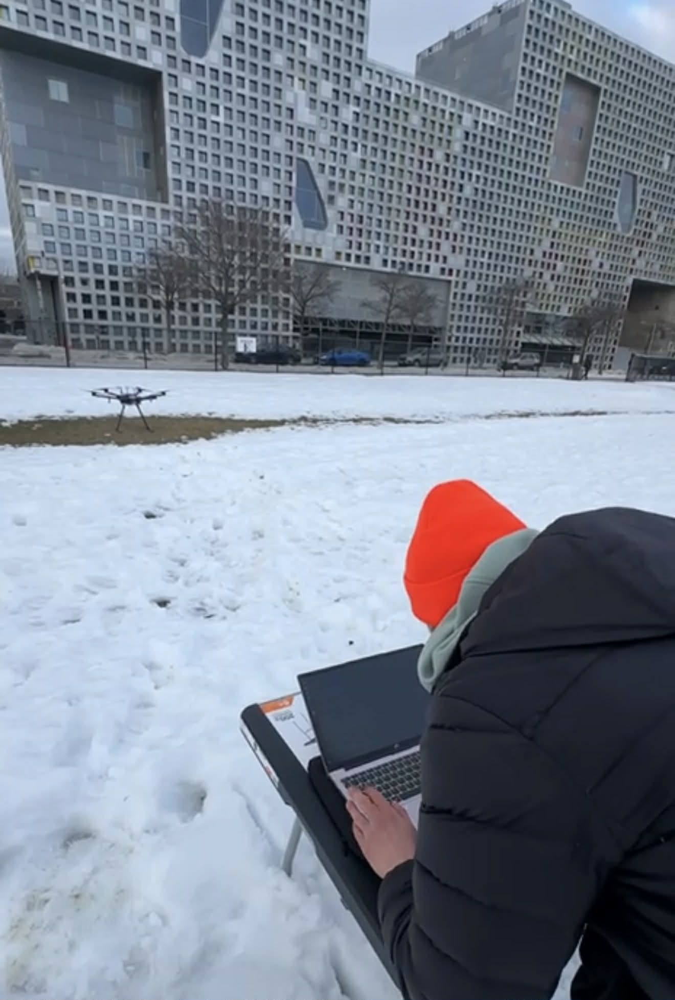
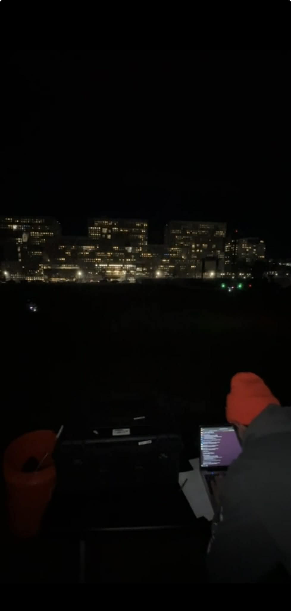
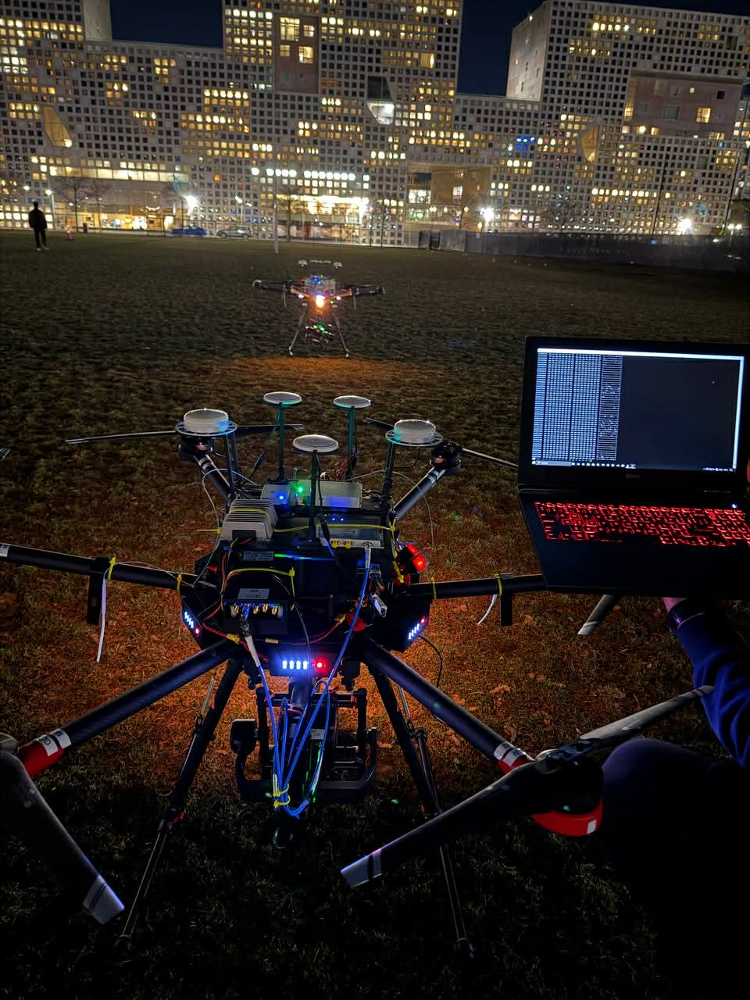

Flight Software · Cambridge, MA
R&D project building flight software for an autonomous drone platform. Developed the software stack for interfacing with and commanding onboard subsystems, including real-time telemetry, gimbal control, and GPS-based pointing logic. Conducted field flight operations in Cambridge, managing FAA coordination and day/night test flights.
Platform Engineer — Marquee · New York, NY
Platform engineer for Marquee, Goldman Sachs' institutional digital storefront. Owned Router — an in-house API gateway handling authn/authz, URL/body validation, CSRF and content policy, backed by Zookeeper service registration across 200+ microservices. Replaced NGINX with Envoy Proxy and implemented traffic isolation across Marquee routers.
Software Engineering Intern · Greenbelt, MD
Built a C++ client-server application for NASA's Radar Control Center using asynchronous UDP sockets. Implemented raw packet decoding, signal quality checks, and AES-256 encryption on broadcast traffic. Delivered operator GUIs for monitoring and broadcasting radar data across the control center network.
Mission Control Lead · Buffalo, NY
Led the Mission Control subsystem for UB's nanosatellite research program. Built the frontend and REST API layer for satellite ground communications. Designed the models stack in Python, Redis, Flask, and MongoDB to handle satellite uplinks and downlinks. Satellites launched with support from the Air Force Research Laboratory and NASA.
Software Engineering Intern · Farmingdale, NY
Modernized the RAMP GUI application for Windows 7 by replacing Advantech's USB driver with Microsoft's WinUSB API. Added barcode scanner support for serial ID reporting across up to 20 handheld telecom units.
Flight operations in Kendall Square, Cambridge — day and night test flights on a DJI M600 platform, with real-time software commanding from the field.



B.S. Computer Engineering
SUNY University at Buffalo